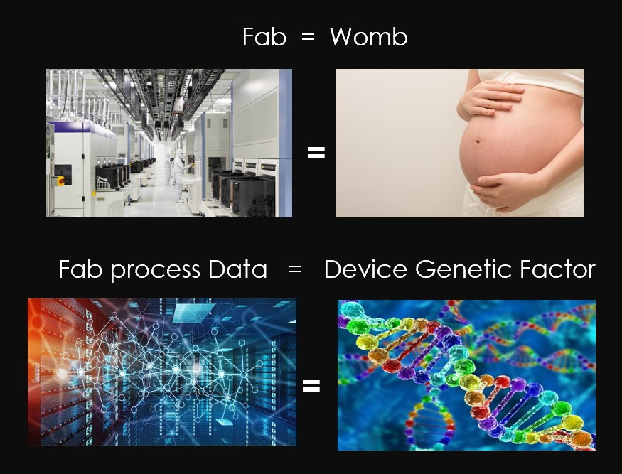
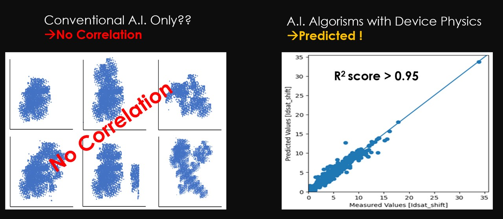

Semiconductor Reliability Test
신뢰성 검사 없이 장치의 유전자 요인분석을 통해 반도체의 신뢰성을 예측할 수 있을까요? 자궁 내부의 유전적 요인에 의해 인간의 모든 특성이 형성되는 것처럼 장치의 신뢰성도 제조과정에서 결정될 수있음을 떠올렸습니다. 그래서 우리 헥스에이아이랩스는 Device Physics와 Reliability Model을 학습한 인공지능 알고리즘을 통해 신뢰성 평가없이 신뢰성을 예측할 수 있는 기술을 만들었습니다.

반도체 산업에서, 고가의 신뢰성 장비180개 이상, 200명의 신뢰성 엔지니어가 배치되어 연간 약 1300개의 테스트 웨이퍼를 소비하고 있습니다. 평균적으로 WLR/PLR 신뢰성 평가 시 평균3.2개월이 소요됩니다. 그리고 WLR((HCI/BTI/TDDB/Vramp)는 4주 정도가 소요됩니다.
이와 비교하여 WLR (HCI/BTI/TDDB/ Vramp) 검사를 위해 두명의 과학자가 반도체 유전자 분석 AI기술로 단 2시간만에 신뢰성 검사가 가능하도록 완성해냈습니다.
관습적인 이전의 4WLR 테스트를 위해 30일이 소요되지만 우리 헥스에이아이랩스의 GAIYA를 통해 2시간만에 검사를 완료할 수 있고 96~98%의 정확도를 가지고 있습니다.

헥스에이아이랩스가 개발한 기술을 가공하거나 개발 중인 기업은 없습니다. 그래서 우리는 6개국에 특허를 출원하고 있습니다. 우리는 개발을 완료하여 한국에 특허를 등록하였습니다.